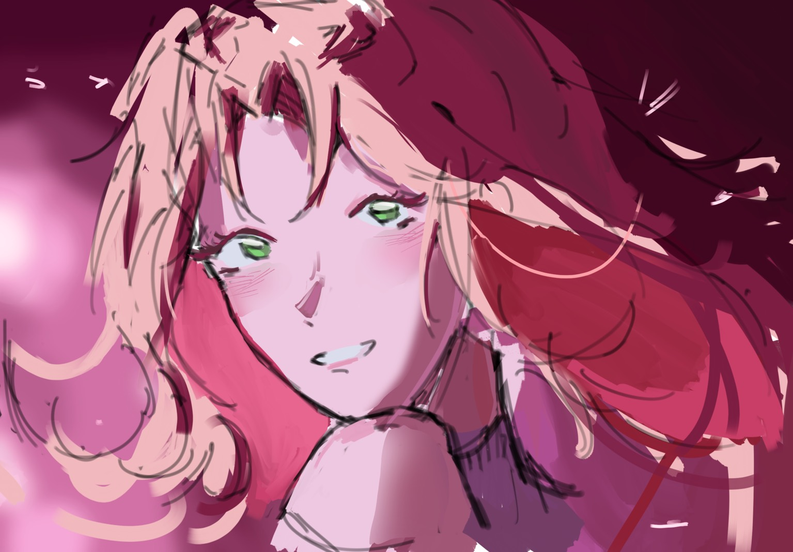
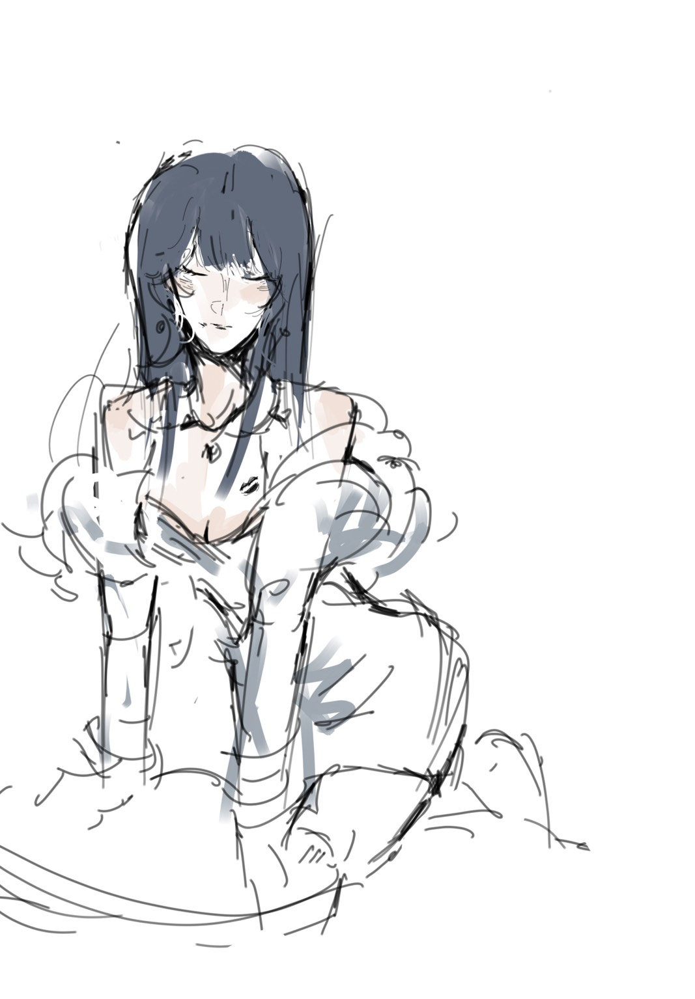
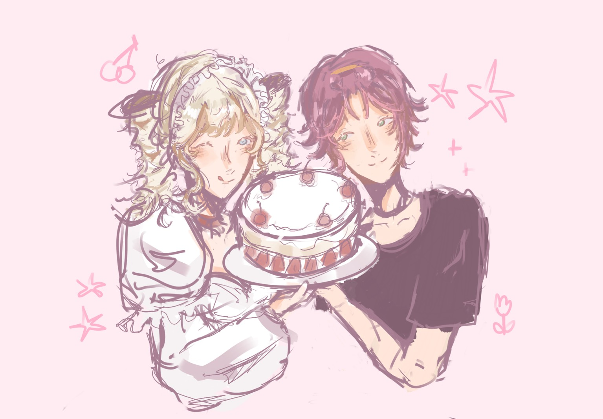
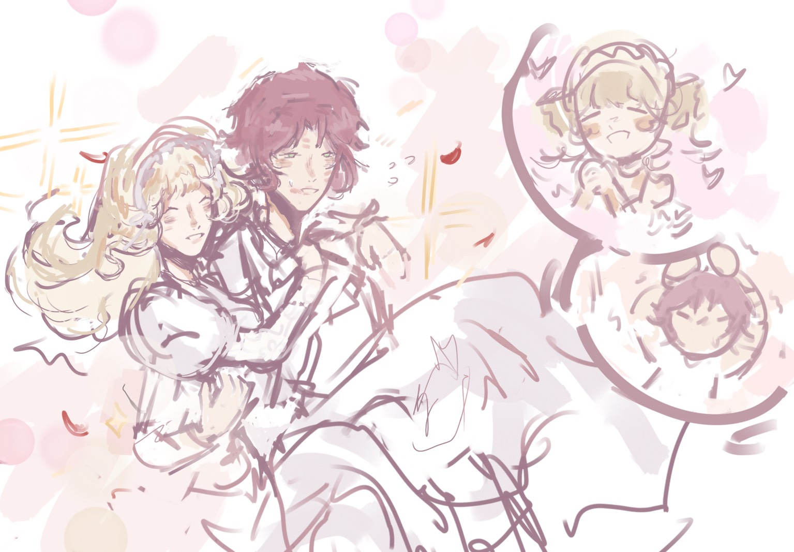

What drawing is
I’ve always liked drawing. It’s something I do in my free time, partly to relax and partly because it’s fun to create things from scratch. I’m not trying to be a professional artist — it’s just a hobby I genuinely enjoy. Drawing lets me experiment with ideas visually and see progress over time.
My experience
I usually draw characters and simple illustrations, sometimes digitally and sometimes on paper. I like experimenting with styles, linework, and color palettes. Even though I’m still improving, the process of sketching and iterating is what I enjoy most. I keep a sketchbook and save digital copies to track growth.
Why I enjoy it
Drawing helps me focus and express ideas that are hard to put in words. It’s calming to sketch loose shapes, build forms, and then add color or shading. Small daily sketches add up into visible improvement — that motivates me to keep practicing. This page is a space to share drawings and record progress.
My Drawing Gallery
Here are some of the drawings I’ve made recently. I like experimenting with different styles, poses, colors, and characters.




Drawing Videos
These videos show short timelapses and process clips from my drawing sessions.
Materials
I switch between traditional and digital tools depending on what I’m drawing.
| Type | Tools |
|---|---|
| Traditional | Pencil (mechanical + normal), eraser, fineliners, sketchbook / drawing paper |
| Digital | iPad, Procreate, IbisPaint |
Fun Fact / Tip
Keep a tiny sketchbook for quick practice — 5-minute sketches are great for improving observation and speed. Try copying poses from photos to study proportions and movement.